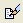
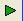
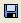

So, where do we start?
Start by opening the scripting window. Click this button  to open it. You will see this editor. There will be a script in the window. Highlight all of the text in the window, either using the mouse or using Ctrl-a, and delete it. Then, copy and paste the following script script into following window window:
{ Rotate the Julian triangle continuously }
{ Hit any key to stop }
Flame.SampleDensity := 1;
while not Stopped do
begin
SetActiveTransform(1);
Rotate(-10);
Preview;
end;
UpdateFlame := False;
All right. Click play  and see what happens! The gears start rotating. Cool! All right. Hit stop. So, that is a script. Right now it would probably be a good idea to save your script.  I will now explain what each part of the script means.
{ Rotate the Julian triangle continuously }
{ Hit any key to stop }
The stuff between the brackets are called comments. They generally explain what the script is about. In the editor, they show up blue, and don't affect how the script runs. Comments can also be added by adding two backslashes, like this //, in front of a line.
Now, the next line.
Flame.SampleDensity := 1;
This tells Apophysis at what quality to render the animation. So what does that mean? Setting the Flame.SampleDenisty to a low number, like one, will make the quality very bad. That's why the animation in the preview window is so grainy. However, this makes it easy for the preview window to render the animation quickly. If you have a higher Flame.SampleDensity , like, say, 300, the flame takes FOREVER to render, and you might get a new flame every 10 seconds. So, stick with 1 for right now.
Now, lets look at the next section:
while not Stopped do
begin
SetActiveTransform(1);
Rotate(-10);
Preview;
end;
This is called a while loop. What does it mean? It means that until a certain action is performed, all of the code between the begin and end keywords will keep repeating. In this case, the code between the begin and end keywords will keep repeating until the stop button is pushed or until the preview window is closed.
So, let's take a look at the code between those begin and end keywords, shall we?
SetActiveTransform(1);
What does this line do? Well, it selects one of the transforms in the transform editor. In this case, it selects transform 2. Confused yet? Hah. I shall explain, never fear. You know how most people start counting things from 1, and go, 1, 2, 3? Well, computer scientists, in their infinite wisdom, decided that counting things from one was stupid. So computer scientists start counting things from zero. So if you have three transforms, called 1, 2, 3, a computer scientist would call them transforms 0, 1, 2. The SetActiveTransform assumes that you are a computer scientist, and so, if you want to select the first transform, you would have to type SetActiveTransform(0);; Got that? Good.
Rotate(-10);
Onward to rotation! This is, in fact, the only command that actually does anything. What does it do? It rotates your triangle by degrees. There are 360 degrees in a circle. Saying Rotate(10); tells Apophysis to rotate the transform that you made active using the SetActiveTransform command. In this case, the transform would rotate 10 degrees counterclockwise. In order to rotate it clockwise, set it to a negative number, like 10.
preview;
So, what doe preview; mean? Remember that little window that popped up when we started the animation? That window is the preview window- it shows you what's actually going on. The preview command tells Apophysis to update that window, and to show what happened to the fractal after we did that rotation.
And that's it for the stuff inside the for loop. This is a very simple animation.
UpdateFlame := False;
And now for the last line! This is a very useful option. Without this line, the fractal in your main window would change into whatever fractal the script turned it into at the end of the animation. However, if you just want to see the animation without changing the parameters of the original fractal, put this line in at the end of your script.
And that, ladies and gentlemen, is a very brief introduction to scripting. The clock's gears now rotate. But what about it's hands?
Add these four lines into the script, after the first rotation but before the preview.
SetActiveTransform(3);
Rotate(-60);
SetActiveTransform(4);
Rotate(-1);
Go ahead and push the play button, and enjoy your clock! Tada!